Ориентирование в России
Вид спорта, выросший из туризма
Спортивное ориентирование выросло у нас из туристских слётов и военно-прикладных гонок, а первые дневные личные соревнования, как писал Н. В. Благово, появились «практически без использования зарубежного опыта» («Первые азимуты на берегах Невы», 2017, с. 14). Ночной «закрытый маршрут» 1939 года, первый дневной личный старт 19 июля 1959 года под Ленинградом, всесоюзные соревнования с 1963-го, федерация СССР в 1979-м и первый чемпионат страны в 1981-м — таков путь, который вид спорта прошёл за два десятилетия. Затем пришли мировые медали: первая — в 1989 году, первое золото — в 1994-м, а в 2000–2010-е годы сборная России была одной из сильнейших в мире в беге, на лыжах и на велосипедах. С 2022 года её членство в Международной федерации ориентирования приостановлено, и российское ориентирование живёт собственным календарём.
Статья — обзор этого пути для всей страны; о ленинградских и петербургских страницах подробнее рассказывает статья об ориентировании в Ленинграде и Петербурге, о чемпионатах — статьи о чемпионатах СССР и России и о чемпионатах мира и Европы. Опорой служат книга Н. В. Благово «Первые азимуты на берегах Невы», исторические страницы В. В. Добрецова на O-Site, хроника и исторические сборники Федерации спортивного ориентирования России, хронология московского ориентирования, история ориентирования в СССР на orient.by и, конечно, календарь и архив карт O-Maps. Все упомянутые люди собраны в указателе имён в конце статьи.
- Предтеча
- 1939, ночной «закрытый маршрут» В. В. Добковича под Ленинградом
- Первый старт
- 19 июля 1959, Линдуловская роща у Рощино
- Всесоюзные соревнования
- с октября 1963 (Ужгород), зимние — с 1966 (официальные, по ФСОР, — с 1968)
- Федерации
- ФСО СССР — с 28 апреля 1979; ФСОР — с 27 ноября 1991
- Чемпионаты
- СССР — 1981–1991 (на лыжах — 1989–1991), России — с 1992
- На чемпионатах мира
- первая медаль — 1989 (А. Абола), первое золото — 1994 (И. Кузьмин, лыжи)
- Главные районы
- Карельский перешеек, Подмосковье, Псковщина (Алоль), Средний и Южный Урал, Приволжье
- Архив O-Maps
- 210 проведённых турниров чемпионатов СССР и России 1981–2026 годов в календаре, около 2 600 карт в архиве, из них около 700 — Москвы и Подмосковья (на октябрь 2026 года; все числа O-Maps — на эту дату)
Места на карте
Где проходили соревнования, о которых рассказывает статья. Точка стоит там же, где событие на карте календаря O-Maps — в его координатах или в центре его карты, поэтому у многодневных стартов точек несколько. Цвет точки показывает, когда место впервые появляется в статье, число в кружке — сколько рядом точек. Значок 📍 в тексте ведёт к месту на этой карте.
Все места списком
1939–1958: туристы, «закрытый маршрут» и контрольный груз

В Скандинавии бег по лесу с картой и компасом был спортом уже в первой половине XX века, но в СССР о зарубежном опыте почти ничего не знали. По словам Н. В. Благово, «новый вид соревнований появился у нас практически без использования зарубежного опыта» («Первые азимуты…», с. 14). Его корни — в спортивном туризме и военно-прикладной подготовке. В 1939 году ленинградский преподаватель Владимир Владиславович Добкович провёл под Ленинградом ночные командные соревнования туристов по «закрытому маршруту»: участники по карте и компасу искали контрольные пункты в заданном порядке, не зная трассы до старта. Советско-финская война 1939–1940 годов, показавшая, что многие молодые командиры плохо читают карту, придала таким соревнованиям явно военно-прикладную направленность, и 12 января 1941 года под Кавголово прошли первые лыжные гонки по закрытому маршруту📍 — мужчины шли 26,5 км с винтовкой, противогазом и 8 кг груза. Подробнее о ленинградских истоках — в статье об ориентировании в Ленинграде и Петербурге.
После войны туристские соревнования возобновились по всей стране, и их правила постепенно складывались в систему. «Картами» служили «синьки» — светокопии топографических карт масштаба 1:100 000 и 1:50 000; дистанция у мужчин достигала 25–30 км, маршрут выдавали в запечатанном конверте, на КП стояли палатки с судьями-контролёрами, а рюкзак с контрольным грузом пломбировали. С 1949 года действовала туристская спортивная классификация, в 1957-м Центральный совет по туризму утвердил первые временные правила туристских соревнований, а 2–3 февраля 1958 года в Свердловске прошли I Всероссийские зимние туристские соревнования📍 — команда Ленинграда стала первой среди 16 команд РСФСР (Благово, с. 11–13, 37).
1959–1963: от Линдуловской рощи до Ужгорода

Днём, по одному и без рюкзаков участники впервые стартовали 19 июля 1959 года в Линдуловской роще у станции Рощино: первенство Ленинграда📍 по карте 1:20 000, которую откорректировал Лев Вениаминович Лебёдкин, собрало 32 мужчин и 17 женщин. Разрешения на необычный старт добился председатель городской туристской секции Алексей Леонидович Васильев, а победили Анатолий Муравьёв и Т. Силиверстова. Именно эту дату Федерация спортивного ориентирования России считает днём рождения отечественного ориентирования. Осенью того же года у станции Шапки впервые наносили на карту найденные ориентиры📍 — прообраз маркированной трассы, которая надолго станет национальной особенностью советского ориентирования.
Новый вид быстро вышел за пределы одного города. В соседней Эстонии соревнования начали проводить почти одновременно с ленинградцами, в сентябре 1959 года, а в июне 1960-го у Орехово прошёл первый матч Эстония — Ленинград📍 — по Благово, «первое в истории отечественного ориентирования соревнование такого ранга». С 1959 года ориентированием занимался москвич Виктор Максимович Алёшин, будущий основоположник советской спортивной картографии; в октябре 1963 года туристы Московского авиационного института бежали маркированную трассу📍 по рукописной красной карте района Бекасова📍. С 1965 года ориентированием в Куйбышеве руководил Геннадий (Генрих) Шур, позднее главный редактор журнала «Азимут».
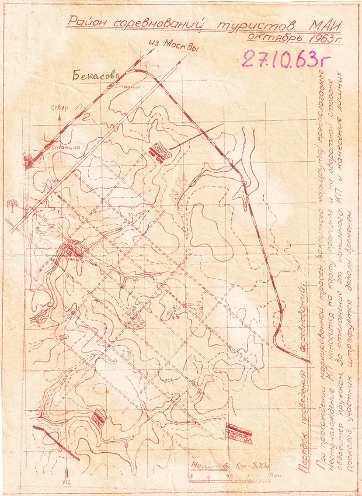
Складывались и общие правила. В декабре 1961 года на всесоюзной методической конференции в Тарту под руководством эстонского педагога Э. Изопа разработали первые отечественные правила соревнований по ориентированию на местности; русский текст редактировала ленинградка Г. Н. Васильева, а в 1962 году в Звенигороде прошёл, по Благово, I Всесоюзный семинар судей (хроника ФСОР называет его сбором судей). Руководила ориентированием Комиссия по слётам и соревнованиям при Центральном совете по туризму и экскурсиям. Одним из первых международных опытов стали армейские матчи с Оборонительными силами Финляндии, которые проводились с 1960 года; на втором из них, в феврале 1962 года под Тбилиси📍, ленинградцы впервые познакомились с жидкостным компасом Suunto, который потом долго копировали кустарно.
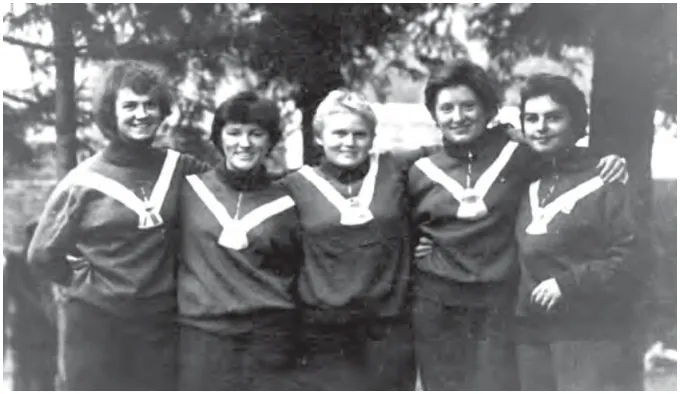
7 июля 1963 года в Песках под Ленинградом прошёл матч пяти команд — Москвы, Ленинграда, Эстонии, Литвы и Свердловска, а 12–14 октября 1963 года в Ужгороде по решению Центрального совета по туризму и ВЦСПС состоялись I Всесоюзные соревнования📍: по Благово — 17 команд (по хронике ФСОР — 30 коллективов), маркированная трасса и бег патрулей, старт парами «из соображений безопасности» и карта — фотокопия старой венгерской, где рельеф показан штриховкой. Призёрами стали Литва (не без скандала: Благово пишет о «грубейшем нарушении правил» литовским судьёй), Эстония и Латвия, Ленинград был четвёртым, Москва — пятой, а лучшей женской командой стала ленинградская. «Это было желанное признание, состоявшееся довольно быстро, всего через четыре года после первого лесного старта», — подытоживает Никита Владимирович Благово (с. 130). Тренером женской сборной Москвы в Ужгороде был Евгений Иванович Иванов, многолетний ответственный секретарь Центральной секции и летописец вида: он вёл рейтинги сильнейших ориентировщиков страны с 1963 по 1984 год.
1964–1970: матчи городов, мастера спорта и первые международные встречи
С 1964 года к «Матчу пяти городов» присоединились Киев, Минск и Рига, и соревнование вошло в историю как «Матч восьми городов». Его принимали Хаанья (1964), Киев, Загорск, Минск, Мадона и Свердловск (1970), а сильнейшей командой серии была Рига. Всесоюзные летние соревнования стали проводить раз в два года: в 1965 году — в Перми📍, в 1967-м — в Горьком📍 (впервые с юношами и девушками), в 1969-м — в брянских лесах (по хронике ФСОР — у Теребени Калужской области), где московская бригада В. М. Алёшина подготовила карты «небывалой доселе достоверности и насыщенности ориентирами» (Благово, с. 42). Зимний сезон получил свою серию: первым всесоюзным зимним стартом Благово считает матч команд городов📍 в Ленинграде в марте 1966 года, дальше были Москва (1967), Калуга📍 (1968), Отепя (1969), Горький (1970), Казань (1971). В Ленинграде же 13 марта 1966 года впервые прошла эстафета на маркированной трассе со штрафными кругами📍 по правилам Л. В. Лебёдкина — «национальная гордость российского спортивного ориентирования», как назвал её Г. В. Шур: у биатлонистов штрафные круги узаконили лишь в 1984 году.
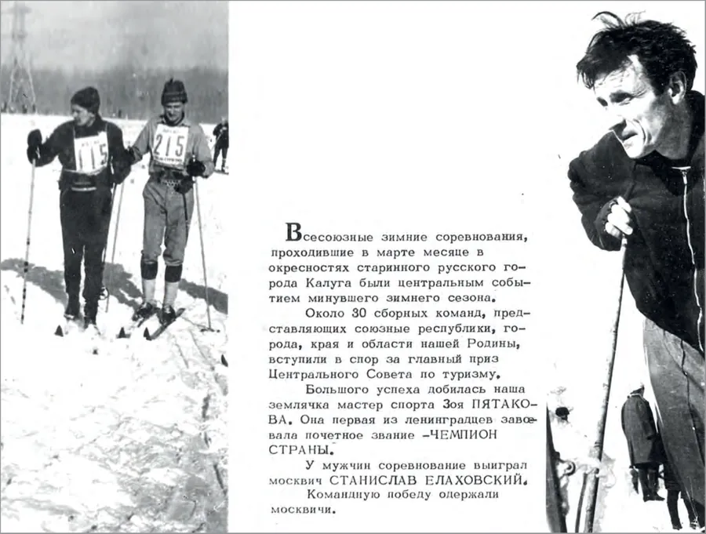
Признание государства пришло в середине десятилетия. В 1965 году утвердили первые официальные правила соревнований «по ориентированию на местности» (по Благово — Спорткомитет СССР, по orient.by — президиум ЦС по туризму), а 1 сентября 1965 года вид спорта вошёл в Единую всесоюзную спортивную классификацию с III–I разрядами. В 1966 году в неё добавили норматив мастера спорта, и после матча восьми городов в Загорске📍 первыми это звание (присвоено в январе 1967 года) получили его победители — ленинградка Людмила Фомичёва и москвич Валерий Игнатенко (по хронике ФСОР, в 1967 году мастерами стали также москвич В. Мохов и ленинградка О. Казанцева (Малова)). В 1968 году комиссии по слётам преобразовали в секции; заместителем председателя Центральной секции ориентирования много лет был лауреат Ленинской премии Борис Иванович Огородников, руководивший советом тренеров и сборной страны.
Весной 1968 года под Каннельярви прошла первая в стране массовая многодневка📍 — более 400 участников из Прибалтики, Москвы, Свердловска и Горького, а в сентябре у Петяярви и Снегирёвки — матч сборных СССР и Болгарии📍, первые в СССР международные соревнования сборных по ориентированию, не считая армейских матчей (главный судья Н. В. Благово). «Советский спорт» писал (вырезка в альбоме «Ориентирование-68»), что для наших спортсменов это была «первая проба сил», а для болгар — «последняя прикидка перед вторым первенством мира»; первые две строчки заняли сборные СССР-1 и СССР-2, победителями стали рижане Р. Аболс и Л. Натра. Выезжать за рубеж начали раньше: в августе 1965 года в Чехословакию ездила команда ЦС по туризму, а в 1967-м сборная СССР на «Кубке мира и дружбы» в Болгарии рижанка Л. Натра (Бланка) выиграла личную гонку, а советские женщины — эстафету (orient.by). В 1969 году на международных соревнованиях в ГДР, генеральной репетиции чемпионата мира 1970 года, советские ориентировщики впервые встретились со всеми сильнейшими соперниками, и Зоя Пятакова была 14-й. Но на сами чемпионаты мира сборную ещё долго не пускали: спортсмены ездили туда лишь на ознакомление (Швеция, 1968; ГДР, 1970; Чехословакия, 1972; Дания, 1974; Финляндия, 1979), и Благово с горечью пишет о «близоруких чиновниках», не дававших сильнейшим бороться на основной дистанции.


К концу десятилетия ориентирование было уже в десятках городов. В марте 1969 года уфимцы принимали первенство ЦС ДСО «Буревестник»📍 с маркированной трассой и эстафетами у Тавтиманова и Юматова, в апреле Одесса приняла первый матч городов-героев (старты прошли у Бендер; инициатор — одессит В. Ф. Юфа; дальше его принимали Брест, Волгоград, Севастополь, Ленинград, Киев, Москва, Минск, Новороссийск и Тула), а с 1970 года стараниями Огородникова соревнования на призы Центрального телевидения показывали ориентирование всей стране.
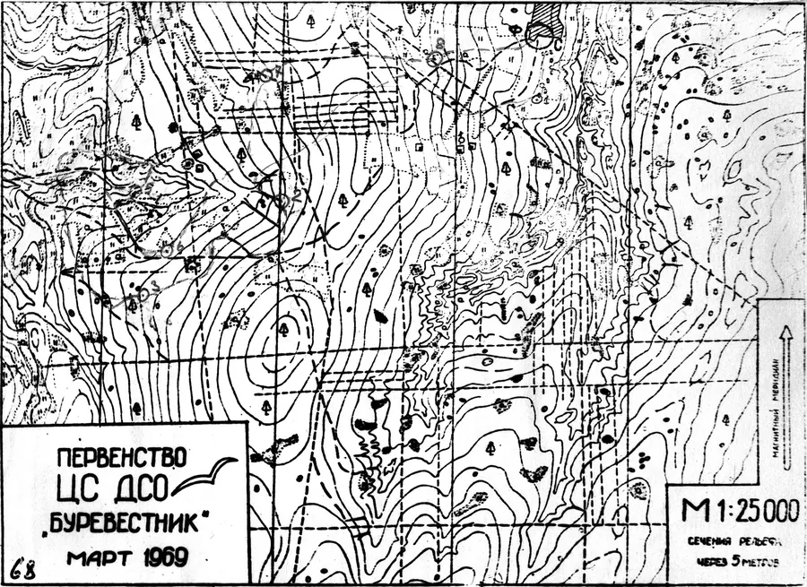
1970-е: всесоюзная география, цветные карты и федерация СССР
Всесоюзные соревнования 1970-х показывают, насколько широко разошёлся вид спорта. На V Всесоюзных📍 под Ленинградом в 1971 году в группе А командный зачёт выиграли латыши, за ними эстонцы и ленинградцы, а в группе Б — Свердловская область, опередившая команды Московской и Челябинской областей, Белоруссии, Казахстана, Молдавии, Узбекистана, Киргизии, Армении и Туркмении (протоколы на O-Site). Дальше летнее первенство страны принимали Выру (1973), Миасс (1975), Сигулда (1977) и Алоль (1978); у спортивных обществ были свои всесоюзные старты (Тракай, Черкассы, Свердловск, Казань, Черновцы), а в 1978 году в Выру📍 разыграли первый летний Кубок СССР. Зимние всесоюзные соревнования за десятилетие побывали в Казани, Минске, Ленинграде, Свердловске и Перми; на ленинградских 1975 года📍 маркированную трассу у мужчин выиграл латыш В. Лиепиньш, заданное направление — эстонец М. Оянду, у женщин победили З. Пятакова и С. Курченкова из Воронежской области.
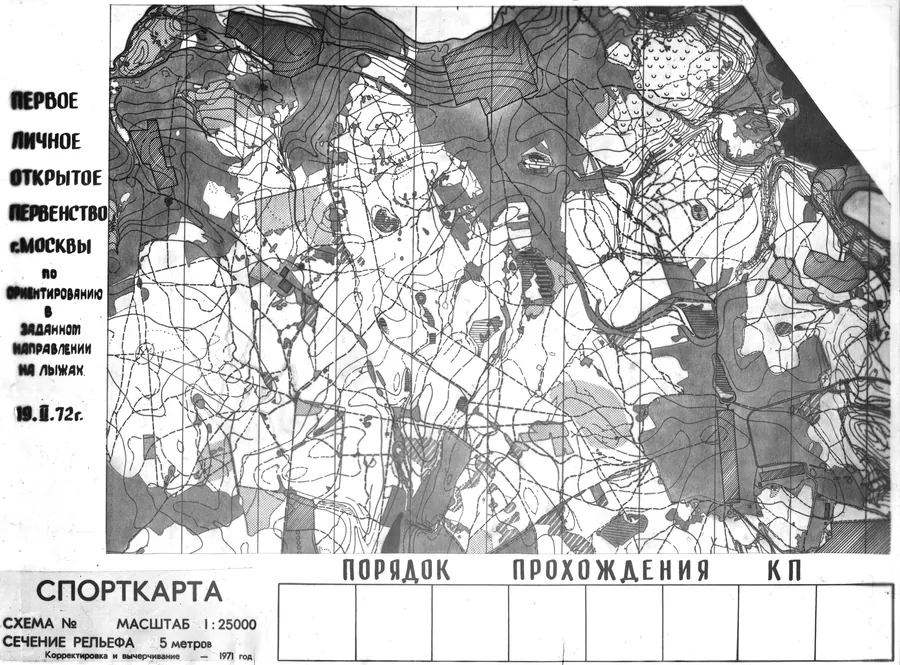
Главным двигателем десятилетия стала картография. Карты по-прежнему делали не профессионалы, а сами спортсмены, и делали в условиях режима секретности, который требовал искажать крупномасштабные карты. Московская бригада Виктора Алёшина освоила для всесоюзных стартов скальный рельеф под Миассом (1975) и моренный у Алоли (1978); Алёшин провёл всесоюзные семинары составителей карт и начальников дистанций (1976, 1977, 1981) и с 1978 по 1989 год руководил учебно-тренировочным центром «Алоль» в Псковской области. Синьки сменили фотоотпечатки с калек, нарисованных тушью, а в середине 1970-х появились многоцветные карты: первые ленинградские пятицветные — 1975 года, в Апатитах первую местную цветную карту напечатали в 1979-м📍. «Золотые годы советской спортивной картографии», по словам В. Белозёрова и Ю. Артемьева в книге Благово, продолжались до середины 1980-х. Росла и сеть зимних стартов: в 1972 году Москва провела на Планерной первое личное первенство города📍 по ориентированию на лыжах в заданном направлении📍, а не только по маркированной трассе.
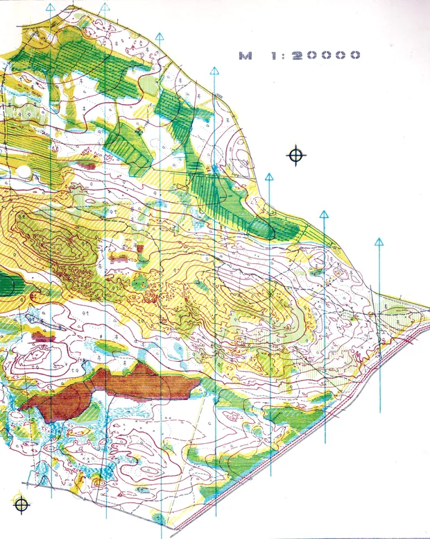
Появилась детско-юношеская система: в 1974 году в Вильнюсе прошёл первый чемпионат СССР среди школьников, в 1977-м в Ярославле — второй, а с 1976 года Дворцы пионеров разыгрывали всесоюзный матч (O-Site). В 1978 году советские студенты выступили на первом чемпионате мира среди студентов в Финляндии, а в июне 1980 года под Кавголово прошли первые всесоюзные соревнования ветеранов📍 — 269 спортсменов старше 35 лет из 43 городов. «В стране выявились мощные центры ориентирования — Ленинград, Эстония, Латвия, Москва, Средний Урал, Литва, Белоруссия», — так описывают конец 1970-х В. Белозёров и Ю. Артемьев в книге Благово (с. 137).
Отделять ориентирование от туризма начали с середины десятилетия: в 1972 году его включили в комплекс ГТО, в 1975-м решили передать Спорткомитету СССР, приказ которого № 702 от 27 июня 1977 года создал оргбюро всесоюзной федерации, а в марте 1977-го Международный олимпийский комитет признал спортивное ориентирование (хроника ФСОР). Организационный перелом наступил 28 апреля 1979 года: на учредительной конференции (у Благово — пленуме) была создана Федерация спортивного ориентирования СССР, и «лесной спорт» вошёл в систему Спорткомитета СССР. Первым её председателем стал генерал-лейтенант Иван Иванович Лисов, в 1964–1975 годах заместитель командующего ВДВ; в руководство федерации вошли С. Б. Елаховский и Б. И. Огородников (позднее — вице-президент), а с 1980 года ответственным секретарём стал И. И. Столов. До этого сильнейших на всесоюзных стартах называли чемпионами страны лишь неофициально; теперь можно было учредить настоящий чемпионат СССР. Была и обратная сторона: многие соревнования, по крайней мере ленинградские, «по организационно-финансовым причинам исчезли из спортивных календарей», а матч городов-героев перестал проводиться.
1981–1991: одиннадцать чемпионатов СССР и выход на мировой уровень

Первый чемпионат страны федерация поручила Ленинграду, а её ответственный секретарь И. И. Столов и член президиума С. Б. Елаховский потребовали «скальный рельеф», какого на спортивных картах СССР ещё не было. Район под Выборгом снимали в масштабе 1:5 000, а карту эстафеты впервые в советском ориентировании сняли инструментально (с разрешения штаба округа и военного цензора) и напечатали в 22 краскопрогона. 4–6 августа 1981 года на I чемпионат СССР вышли 118 спортсменов, из них 76 мастеров спорта: сборные союзных республик (кроме Армении, Таджикистана и Туркмении), Москвы и Ленинграда. На Сайменских дачах📍 лично-командную гонку выиграли Игорь Захаров и латышка Сармите Габране, эстафеты📍 у озера Уловного — мужчины Эстонии и женщины Ленинграда, а личную гонку📍 в Вещёво — ярославец Борис Прокофьев и снова Габране, которых «Советский спорт» и назвал первыми чемпионами СССР. «I Чемпионат СССР по летнему ориентированию остался в памяти и в истории как важное событие, открывшее новую эру отечественного лесного спорта», — пишет Благово.
Дальше чемпионат объехал всю страну: Великие Луки📍 (1982), Цесис📍 (1983), Тарту📍 (1984), Вижница📍 в Буковине (1985), Каркаралинск📍 в Казахстане (1986), Свердловск📍 (1987), Минск📍 (1988), Вильнюс📍 (1989), Плявиняс📍 (1990) и Павлово📍 на Оке (1991). Спортсменам приходилось приспосабливаться то к балтийским дорожным сетям, то к карпатским склонам, то к гранитным горам Казахстана. В программу входили и необычные теперь испытания — например, сдача беговых нормативов на стадионе. Среди героев тех лет — ленинградец Михаил Святкин, чемпион 1982, 1984 и 1986 годов (а в 1991-м — и в эстафете), латыши Айгарс Лейбомс и Алида Абола, эстонцы и литовцы, уральцы и москвичи; общекомандный зачёт выигрывали Ленинград, РСФСР-1, Литва. Подробно об этих чемпионатах — в статье «Чемпионат СССР по ориентированию».


Зимний сезон долго жил Кубками СССР: первый📍 прошёл в 1981 году в Свердловске, последний — в 1988-м в эстонском Выру. Первый зимний чемпионат собирались провести в Псковской области, но не было снега, и 7 декабря 1989 года📍 он открылся в Горнозаводске Пермской области; следующие два прошли под Свердловском📍 и в Шаманихе📍. Их победители и призёры — Владислав Кормщиков, Виктор Корчагин, Наталья Зацепина, Дмитрий Калимуллин — через несколько лет составят ядро сборной России (подробнее — «Чемпионат СССР по ориентированию на лыжах»). В 1989 году лыжное ориентирование впервые вошло в программу зимней Спартакиады народов РСФСР в Кунгуре (хроника ФСОР).
В 1986 году СССР стал полноправным членом Международной федерации ориентирования (по данным orient.by и учебника Дьякова и Яговкина «Спортивное ориентирование»), и в 1987 году во Франции сборная впервые вышла на старт чемпионата мира в беге: среди её участников были ленинградцы Владимир Алексеев и Надежда Левичева, а башкирский ориентировщик В. Лукьянов, по сборнику ФСОР, занял 25-е место; на лыжном чемпионате мира 1988 года в Куопио Иван Кузьмин стал шестым в классике. В 1989 году в шведском Шёвде Алида Абола принесла СССР первую медаль чемпионата мира в беговом ориентировании — бронзу классической дистанции. Московский турклуб выпустил об этом буклет с таблицами времени по этапам и картой с путями призёров (сторона 1, сторона 2). Последнюю медаль сборной СССР, тоже бронзу классики, в 1991 году в Марианске-Лазне взял эстонец Сикстен Сильд. Последнюю эстафету чемпионатов СССР 31 июля 1991 года в Горбатове📍 выиграли мужчины Ленинграда; через несколько месяцев страны не стало, а её спортсмены, тренеры и картографы продолжили работу уже в федерациях новых государств.


1990-е: новая федерация, новые чемпионаты, первые золотые медали
Российская федерация появилась ещё до распада Союза: 27 ноября 1991 года в Москве учредительная конференция с представителями 48 областей, краёв и республик создала Всероссийскую федерацию спортивного ориентирования, нынешнюю ФСОР (документы конференции). Её президентами были Николай Дмитриевич Васильев (1991–1995) и Сергей Георгиевич Беляев (с 1995 года; в 2003–2007 годах избранный президентом Ю. С. Никонов полномочий не принял, и федерацией руководил вице-президент Юрий Брониславович Янин, а с 2007-го президент снова Беляев — список руководящих органов ФСОР). Союзная федерация весной 1992 года прекратила работу.
Первым национальным титулом новой страны стал лыжный чемпионат в Рославле📍 в феврале 1992 года, а 8 августа в Волгоградской области прошёл первый чемпионат России в беге: спринт выиграли Александр Клочков и Ирина Михалко. Чемпионат, как и союзный, путешествовал по стране — Сортавала, Кыштым, Алоль, Железноводск, Геленджик, Тольятти, Пермь; в Сортавале в 1993 году📍 он служил отбором на чемпионат мира в США. 16 мая 1992 года в Яппиля под Петербургом прошёл первый в России этап Кубка мира📍: «впервые соревнования такого масштаба можно было посмотреть, не оформляя загранпаспорт» («Узелки» на O-Site). Дальше были Кубок мира среди ветеранов📍 1995 года, этапы Кубка мира на лыжах в Сыктывкаре и Красноярске (1997), юниорский чемпионат мира на лыжах в Велегоже (1998) и ветеранский чемпионат мира на лыжах📍 в Лемболово (1999) (мероприятия IOF в России).

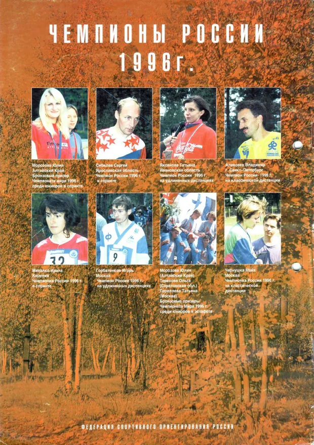
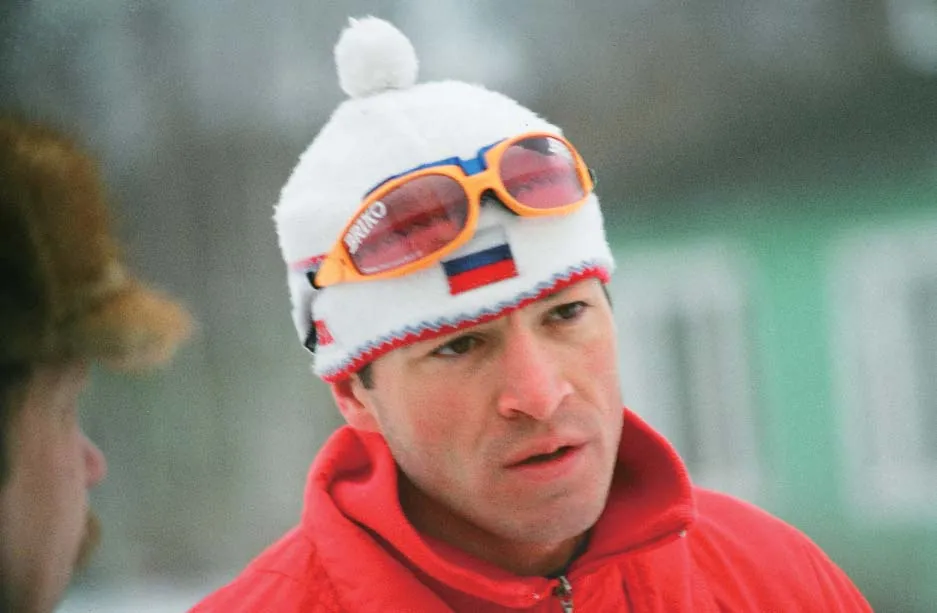
Самые громкие успехи 1990-х принесли лыжники. На первом же чемпионате мира, в 1992 году во французском Понтарлье, Иван Кузьмин взял две бронзы, а эстафета — серебро; в 1994 году в Италии Кузьмин разделил золото короткой дистанции с итальянцем Николо Коррадини и стал первым российским чемпионом мира по спортивному ориентированию, а в 1998 году Виктор Корчагин и мужская эстафета принесли России золото в Австрии. В беговом ориентировании до мировых медалей было дальше, но ещё в советские годы сборная впервые стартовала на чемпионате мира 1987 года во Франции, а в 2000 году на возрождённом чемпионате Европы в Трускавце белгородец Валентин Новиков выиграл обе личные дистанции.
Девяностые дали ориентированию и новые виды. Велоориентирование началось с экспериментального старта в Петербурге в 1994 году и первого чемпионата России📍 в 1996-м, рогейн — с открытого чемпионата Перми📍 28–29 августа 1999 года (12 команд, 24 часа), который провёл Герман Шестаков, познакомившийся с рогейном в США (история рогейна в России). Появилась и своя пресса: в 1991–1997 годах выходил «О-вестник» Д. Л. Никифорова и А. С. Лосева, первый российский журнал об ориентировании, а с 1997 года — журнал ФСОР «Азимут», который первые десять лет вёл Геннадий (Генрих) Шур.
2000-е: электронная отметка и золотое десятилетие сборной

Технологический перелом пришёлся на 2001 год. В марте на чемпионате Европы по лыжному ориентированию в Вологде📍 в России показали систему SPORTident, а в октябре на чемпионате России в Нижегородском кремле📍, по сборнику ФСОР «Ориентирование в регионах», впервые применили электронную отметку на КП — оборудование привезли вологжане. С 2003 года появилась отечественная SFR-system, созданная под руководством петербуржца Александра Курдюмова (серийно выпускается с 2006 года). Электроника дала сплиты, онлайн-результаты, а позднее и GPS-трансляции, но в регионы приходила постепенно.
В беговом ориентировании началась эпоха, которую статья O-Maps «Чемпионаты мира по ориентированию» называет золотым десятилетием сборной России. В 2004 году россияне взяли на чемпионате мира три серебра, в 2005-м в японском Аити Андрей Храмов выиграл длинную дистанцию — первое личное золото России на чемпионатах мира бегом, в 2006 и 2007 годах мужская эстафета Роман Ефимов — Храмов — Валентин Новиков выигрывала мировое первенство, а Храмов в 2008 и 2009 годах дважды подряд стал чемпионом мира в спринте. Сильнейшие региональные школы этих лет видны по протоколам чемпионатов России: в 2005 году в Миассе эстафету выиграли белгородцы Ефимов, Роман Ряполов и Новиков.
Лыжники тем временем дошли до вершины: на домашнем чемпионате мира 2007 года в Подмосковье📍 сборная России выиграла все восемь комплектов золотых медалей. Велоориентировщики начали своё восхождение с золота Руслана Грицана (2005) и эстафет 2006, 2009 и 2010 годов. В 2003 году Пермь📍 приняла первый в истории чемпионат Европы по рогейну, в 2008-м Мичуринское📍 — пятый.
Параллельно ориентирование становилось массовым. С 2006 года проводится «Российский азимут» — всероссийские соревнования, которые проходят одновременно во многих регионах: по данным «Азимута», в первый год вышли около 170 тысяч человек («Азимут», 2014, № 3), а в 2007 году, по отчётному докладу ФСОР, — 234 тысячи (доклад 2016 года). В 2014 году соревнования прошли уже в 69 регионах, а центральный старт в Красноярске собрал 6 тысяч человек («Азимут», 2014, № 3).
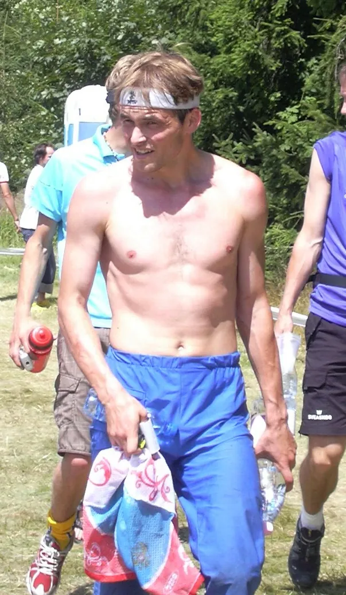
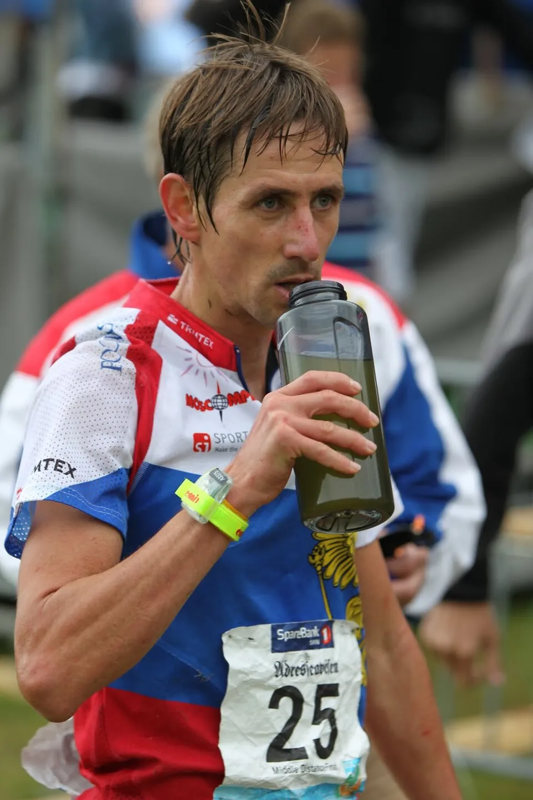
2010-е: титулы во всех дисциплинах и чемпионат на всю страну
Десятилетие началось с эстафетного золота 2010 года в Тронхейме (Храмов, Дмитрий Цветков, В. Новиков). В 2013 году в финском Вуокатти Леонид Новиков выиграл миддл, а эстафета с ним снова стала чемпионской; в 2014-м чемпионкой мира на длинной дистанции стала нижегородка Светлана Миронова, в 2016-м в Швеции победила женская эстафета Анастасия Рудная — Миронова — Наталья Гемперле (Виноградова), а в 2018-м в Латвии Гемперле выиграла миддл. На чемпионатах Европы россияне в 2016 году стали первыми чемпионами в спринт-эстафете.
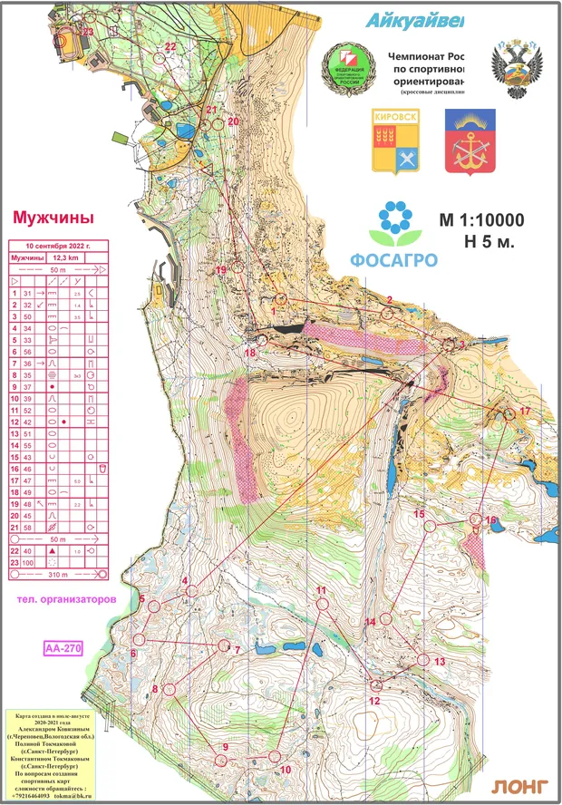
Лыжники в 2011 году первыми выиграли смешанную спринт-эстафету чемпионатов мира (Андрей Григорьев и Полина Мальчикова), следующим лидером стал Андрей Ламов. Россия снова принимала мировой и европейский уровень: чемпионат Европы в Тюмени📍 (2014), первый студенческий чемпионат мира на лыжах в Алексине (2016), чемпионат мира в Красноярске📍 (2017; там же разгорелся громкий допинговый случай — IOF аннулировала результаты одной из российских спортсменок) и зимнюю Универсиаду 2019 года в Красноярске, где лыжное ориентирование впервые вошло в программу и россияне выиграли 4 из 7 золотых медалей (Википедия). Велоориентировщики Антон Фолифоров и Руслан Грицан почти десятилетие делили мужские титулы мира, Ольга Шипилова-Виноградова выиграла три миддла подряд (2016–2018). Первое золото в трейл-ориентировании в 2011 году взял Дмитрий Кучеренко (паралимпийский класс), а Павел Шматов стал серебряным призёром чемпионатов мира 2016 и 2019 годов (WTOC).
Внутри страны чемпионат России окончательно стал всероссийским: в 2010-е его принимали Москва📍 (к 50-летию московского ориентирования), Псков, Челябинск, Пермь, Сочи, Солнечный в Хабаровском крае📍, Чита📍, Архангельск, Калининградская область. В 2013 году у Алоли прошёл чемпионат мира по рогейну📍. В конце 2016 года ФСОР, по данным Благово, официально признала 19 июля 1959 года днём рождения отечественного ориентирования («Первые азимуты…», с. 62).
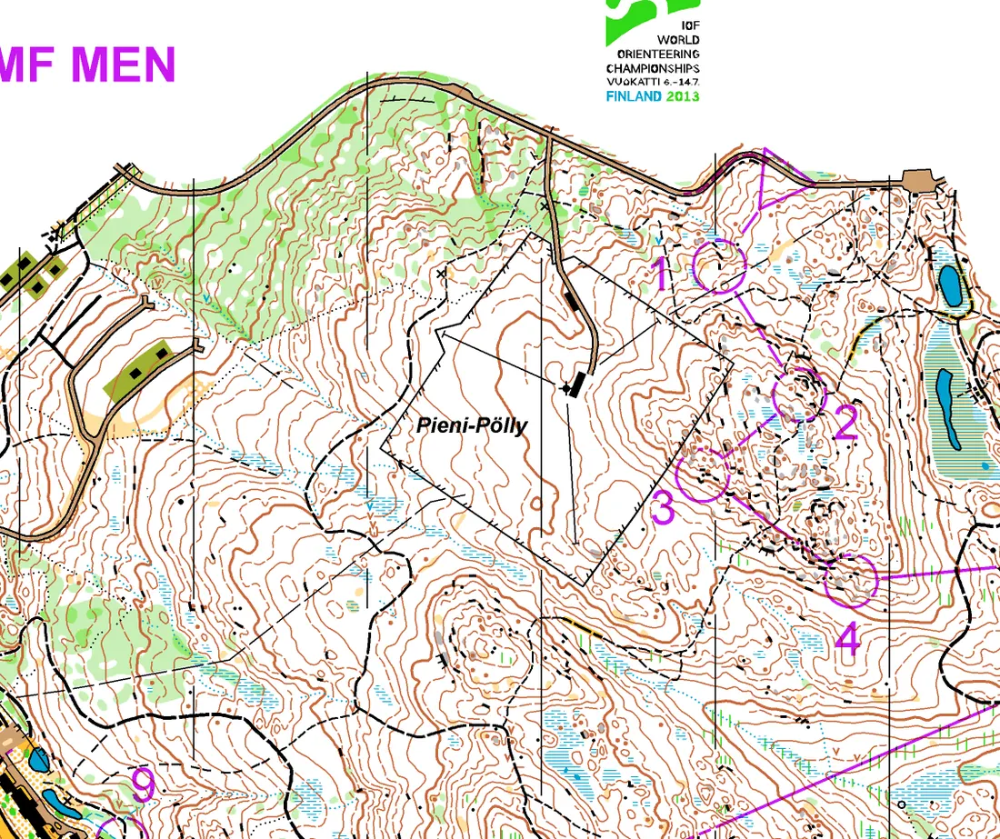
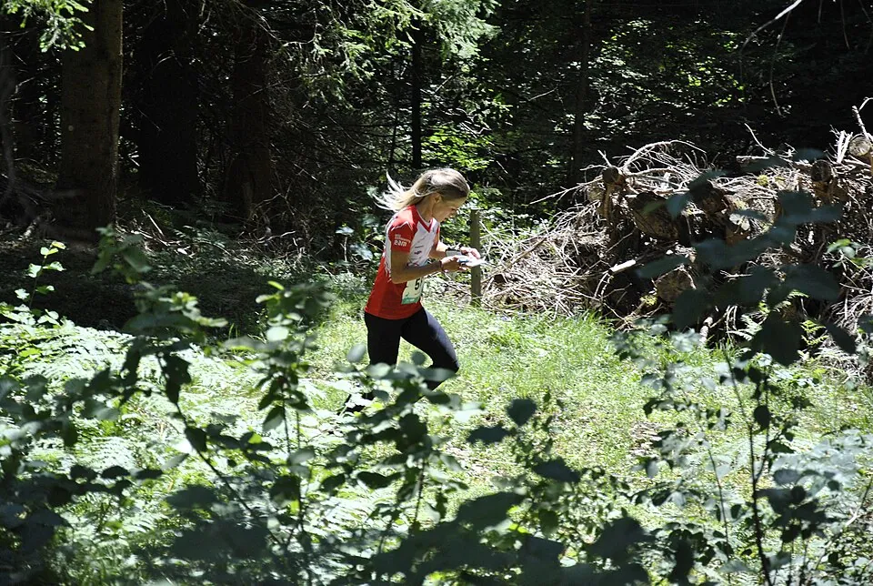
2020-е: пандемия, отстранение и свой календарь
Чемпионат Европы по лыжному ориентированию в Ханты-Мансийске📍 в марте 2020 года прошёл за несколько дней до того, как пандемия остановила спорт; беговой чемпионат мира 2020 года отменили. В 2021 году россияне выступали на чемпионатах мира IOF в нейтральном статусе (по решению Спортивного арбитражного суда по делу WADA против РУСАДА, новость IOF) и ещё выигрывали медали во всех трёх дисциплинах: Наталья Гемперле — два серебра в Чехии, лыжники — пять медалей в эстонском Кяэрику, велосипедисты — семь в финском Куортане, где Светлана Фолифорова выиграла масс-старт и миддл.
28 февраля 2022 года совет Международной федерации ориентирования приостановил членство Федерации спортивного ориентирования России: российским спортсменам закрыт допуск на старты IOF, в том числе в нейтральном статусе, а права России на проведение соревнований отозваны. Отменили и чемпионат Европы по рогейну под Зеркальным📍. В 2024 году IOF ввела статус независимого спортсмена, но лишь для живущих за пределами страны и только на рейтинговых стартах, в марте 2026 года совет IOF оставил ограничения без изменений, а в сентябре изменения для ФСОР не рассматривались. Часть спортсменов сменила сборную: Наталья Гемперле, планировавшая переход ещё до 2022 года, с 2023-го бежит за Швейцарию и в 2024 году стала чемпионкой мира в её спринт-эстафете.
Внутренний календарь при этом не сократился. Чемпионаты России прошли в Хибинах📍, Мурманске, Партизанске и Находке📍 в Приморье, в центре Санкт-Петербурга📍, в Казани📍 и в Иркутске📍, на лыжах появились новые турниры вроде Кубка АКФЫ. Приказом Минспорта от 12 мая 2023 года ФСОР получила государственную аккредитацию, по форме 1-ФК в 2023 году ориентированием занимались около 207 тысяч человек, а членами федерации в 2024 году были 80 региональных организаций (отчёт ФСОР за 2024 год). Всероссийская неделя ориентирования 2024 года собрала 143 тысячи участников в 75 регионах.

Лыжное ориентирование: школа, которая выиграла восемь из восьми
Зимняя дисциплина старше самого вида: от лыжной гонки по закрытому маршруту 1941 года📍 через маркированные трассы и эстафеты со штрафными кругами 1960-х к всесоюзным Кубкам 1981–1988 годов и трём чемпионатам СССР 1989–1991 годов. Главной особенностью советской школы была маркированная трасса: лыжню нужно пройти целиком, а найденные на ней КП точно нанести на карту, и ошибка стоит штрафа. Международная программа, напротив, строится на выборе пути по сети лыжней разной ширины, и россиянам пришлось освоить обе.
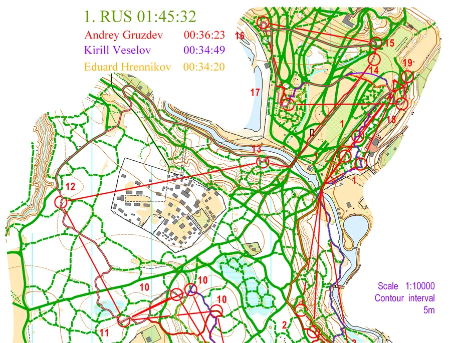
Российские лыжники вышли на чемпионат мира в 1992 году и сразу взяли медали (по немецкой Википедии, команда выступала ещё как сборная СНГ), а в 1994-м Иван Кузьмин разделил с итальянцем Николо Коррадини золото короткой дистанции в Италии — это было первое для России золото взрослых чемпионатов мира по спортивному ориентированию. Дальше были победы Виктора Корчагина (1998), Владислава Кормщикова и Татьяны Власовой на первом домашнем чемпионате мира в Красноярске📍 (2000), первый чемпионат Европы в Вологде📍 (2001) и вершина — чемпионат мира 2007 года в Подмосковье📍: восемь золотых медалей из восьми, по четыре у Власовой и Эдуарда Хренникова. На следующих чемпионатах лидерство перешло к поколению Андрея Ламова, Кирилла Веселова, Марии Кечкиной и Алёны Трапезниковой; Россия ещё трижды принимала чемпионаты Европы — в Иваново📍 (2006), Тюмени📍 (2014) и Ханты-Мансийске📍 (2020) — и в 2017 году второй чемпионат мира в Красноярске📍. Подробнее — в статьях о чемпионатах России, мира и Европы по лыжному ориентированию.
Внутренний чемпионат России по лыжному ориентированию разыгрывается с 1992 года (Рославль📍) и по-прежнему тяготеет к Уралу и Сибири: по записям календаря O-Maps чаще всего его принимали Томск и Кыштым (по шесть раз, считая Слюдорудник под Кыштымом), а также Пермь, Горнозаводск и Златоуст (по четыре). Лыжные школы Свердловской, Челябинской и Пермской областей, Башкортостана, Красноярского края и Москвы годами делили между собой эстафетные медали.
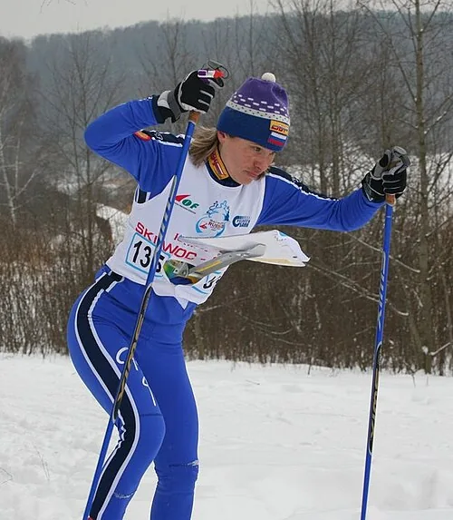
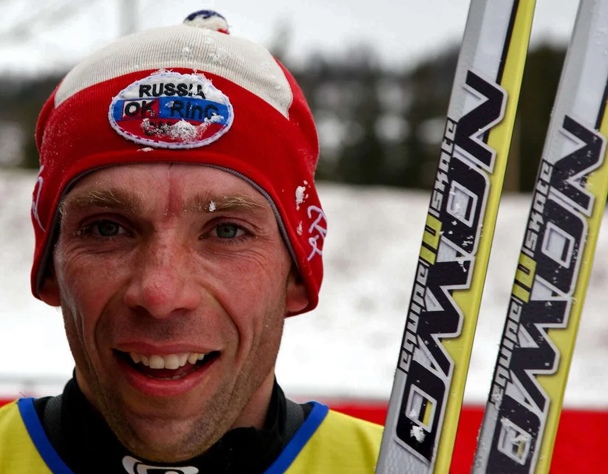
Велоориентирование: от двух «Кам» до мировых титулов
Самая молодая дисциплина родилась в России уже после распада СССР. Виктор Бородин вспоминал экспериментальный старт в Санкт-Петербурге 6 октября 1994 года: шестикилометровую трассу прошли трое участников, двое из них — на складных «Камах». Первый чемпионат России📍 прошёл в сентябре 1996 года под Лемболово, и все три гонки выиграли Виктор Корчагин и Екатерина Петрова. На чемпионатах мира, которые IOF проводит с 2002 года, первую российскую медаль взял тот же Корчагин (бронза 2004 года), а в 2005-м Руслан Грицан выиграл миддл и лонг. Дальше сборная России стала одной из сильнейших в мире: эстафеты, Ксения Черных, Антон Фолифоров, в 2016 году выигравший все три личные гонки чемпионата мира, Ольга Шипилова-Виноградова, Григорий Медведев. В 2011 году Ленинградская область приняла чемпионат Европы📍 с центром в Рощино. Чемпионат России по велоориентированию с тех пор прошёл в двух десятках мест — от Кыштыма и Тулы до Воронежа и Ярославля; чаще других его принимали Москва и Подмосковье, Нижегородская и Владимирская области (подробнее — «Чемпионат России по ориентированию на велосипедах» и WMTBOC).
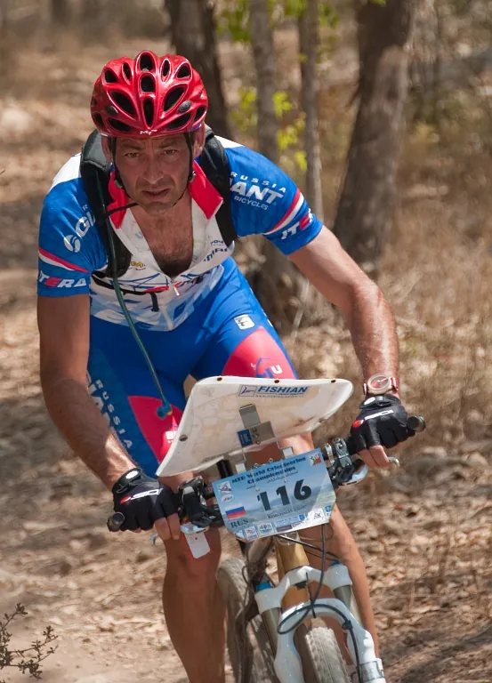
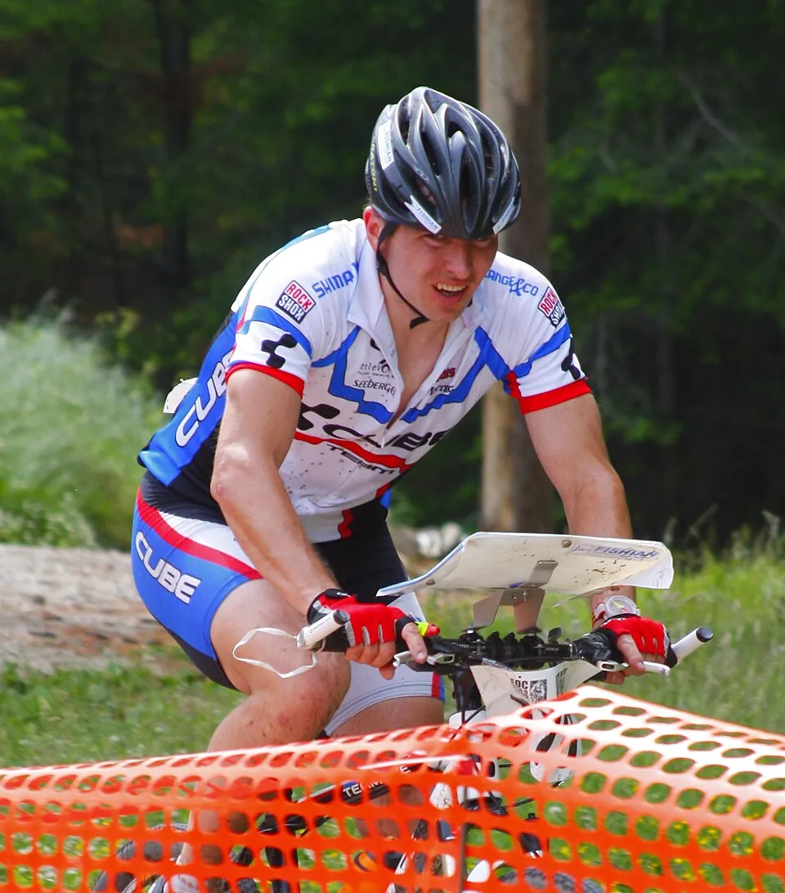
Рогейн и другие виды: «закрытый маршрут» возвращается
Командное ориентирование на многие часы Благово называл возвращением «закрытого маршрута», только пришедшим уже из Австралии и под английским названием: «Воистину — что имеем, не храним». Первый чемпионат России по рогейну📍 организовал в 2001 году под Пермью Герман Шестаков, и там же в августе 2003 года прошёл первый в истории чемпионат Европы по рогейну📍. Россия принимала чемпионат Европы в 2008 году в Мичуринском📍 и чемпионат мира 2013 года в Алоли📍 — 314 команд, 664 участника; чемпионат Европы 2022 года под Зеркальным📍 был отменён в марте 2022-го. Второй чемпионат России по рогейну прошёл в 2005 году, и с тех пор они проводятся каждый год — от Хакасии📍 до Абрау-Мысхако📍, а к пешему добавились рогейны на лыжах, велосипедах и байдарках.
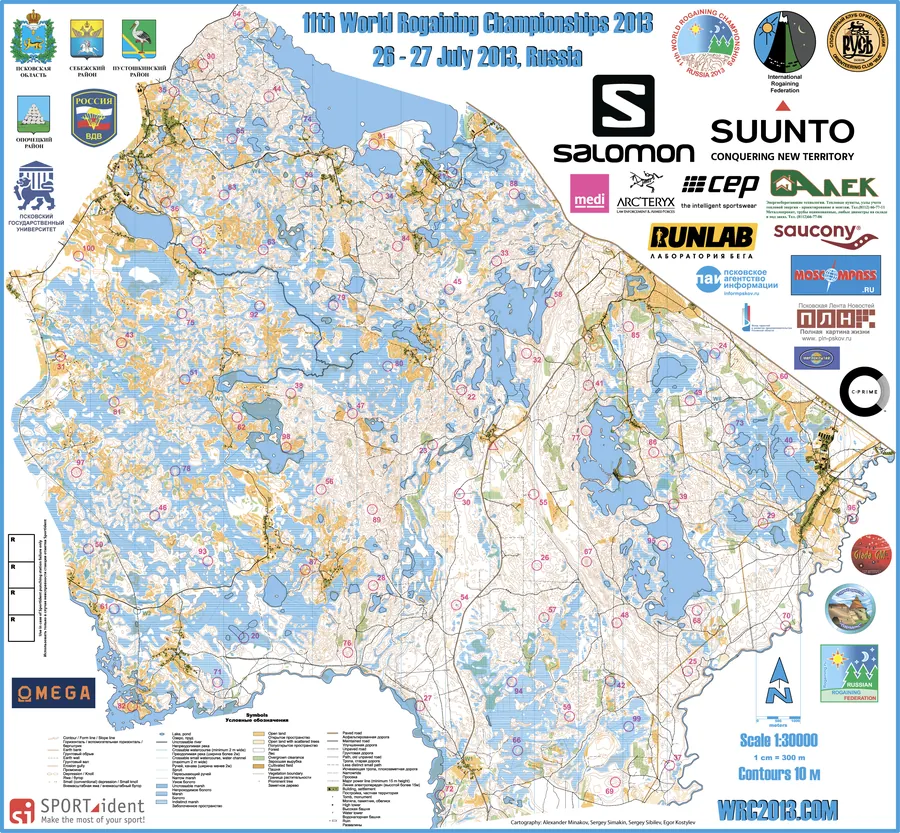
Самая «тихая» дисциплина, трейл-ориентирование, проверяет не скорость, а точность чтения карты: участник идёт по дорожке и с неё определяет, какой из видимых флажков стоит на месте, указанном на карте, поэтому вид доступен и людям с ограниченными возможностями. Россияне выигрывали медали чемпионатов мира с 2007 года, а в 2011-м Дмитрий Кучеренко стал первым российским чемпионом мира в паралимпийском классе (WTOC). Внутри страны трейл-ориентирование развивается вокруг инклюзивных проектов: в 2019 году в Петербурге прошёл чемпионат России по спорту лиц с поражением опорно-двигательного аппарата, проводятся всероссийские соревнования «Балтийский берег», а в 2022/23 учебном году онлайн-трейл вошёл в программу всероссийского фестиваля (альманах Института коррекционной педагогики, № 50).
География: от Москвы и Урала до Сибири и Дальнего Востока
У каждого большого центра своя «точка отсчёта». В Москве ещё в июне 1958 года у станции Тучково прошли соревнования туристов📍 с ночным этапом по карте (победила команда МХТИ во главе с Б. И. Огородниковым), а днём рождения московского ориентирования считается 19 мая 1963 года — первые отборочные старты в сборную у деревни Лямцино; в июне того же года начался Кубок Москвы📍, в сентябре прошёл первый чемпионат города (хронология o-moscow.ru). В 1965 году у Редкина москвичи под руководством В. М. Алёшина впервые бежали по полностью откорректированной, вычерченной вручную спортивной карте. Столичные клубы — «Динамо», «Труд», «Буревестник», «Зенит», «Кунцево», МВТУ — дали стране десятки мастеров, а чемпионат России 2013 года📍 в Бутовском лесопарке был посвящён 50-летию московского ориентирования. Около 700 карт Москвы и Подмосковья хранит архив O-Maps.
На Урале соревнования по ориентированию вошли в программу I Всероссийского слёта туристов в Свердловской области ещё в 1958 году, а в феврале 1962-го на слёте «Европа — Азия» прошли соревнования на маркированной трассе, которые ФСОР называет первым межрегиональным стартом в России (история ФСОР). Свердловский картограф Г. Кунцевич в 1972 году нарисовал цветную карту для всесоюзных соревнований (биография ФСОР; первую цветную карту в стране ещё в 1965 году сделали в Куйбышеве), в 1974-м здесь прошли I Всероссийские соревнования по лыжному ориентированию (Ю. С. Константинов), в 1981-м — первый Кубок СССР на лыжах📍. В Перми секцию в 1963–1979 годах вёл Герман Шестаков, и область принимала II Всесоюзные соревнования📍 (1965), первый лыжный чемпионат СССР в Горнозаводске (1989), первый чемпионат России и первый чемпионат Европы по рогейну. В Челябинске в 1971 году открылась первая в России детско-юношеская спортшкола по ориентированию (директор Ю. В. Драков), а на VII Всесоюзных соревнованиях 1975 года в Миассе москвич Сергей Симакин стал первым россиянином, выигравшим мужской зачёт всесоюзного первенства. Кыштым со Слюдорудником (десять турниров по календарю O-Maps) и Златоуст до сих пор — одни из самых частых хозяев национальных чемпионатов.
Диаграмма показывает разделение труда: беговые чемпионаты чаще всего принимали Северо-Запад и Приволжье, лыжные — Приволжье (Пермский край, Башкортостан, Нижегородская область), Урал и Сибирь, велосипедные — Центральная Россия и Приволжье. В Поволжье ориентирование пришло рано: в Казани первые соревнования прошли в октябре 1962 года, а затем город принимал всесоюзные старты 1971, 1974, 1977 и 1980 годов; с 1983 года здесь проводится многодневка «Мемориал Мусы Джалиля». В Куйбышеве областную секцию с 1965 года возглавлял Г. В. Шур, в Горьковской области прошли III Всесоюзные соревнования (1967) и последний чемпионат СССР (1991), а в Башкирии уфимские школьники начали в 1960 году, взрослые — в 1961-м, и город Октябрьский прозвали «городом ориентировщиков» («Ориентирование в регионах»). Старейшей многодневкой России ФСОР считает тульскую, начатую на майские праздники 1968 года.
Псковщина обязана ориентированию учебно-тренировочным центром «Алоль»: с 1976 года здесь шли семинары картографов и Кубок дружбы социалистических стран, в 1978-м открылся всесоюзный центр, с 1981 года — «Мемориал Матросова», собиравший к 1987 году около четырёх тысяч участников (В. М. Алёшин об Алоли). В Сибири первые краевые соревнования на Алтае прошли в 1962 году, в Красноярске секция появилась в 1967-м, а позднее город принимал два чемпионата мира и Универсиаду. На Дальнем Востоке в 1962 году под Хабаровском прошли первые зональные соревнования Сибири и Дальнего Востока, а хабаровчанин Эдуард Хренников стал одним из самых титулованных лыжников-ориентировщиков мира (история ориентирования Хабаровского края). Ленинградская история, с которой всё началось, подробно рассказана в отдельной статье.
Руководители и летописцы
Во главе советского ориентирования стояли люди очень разных профессий. Центральную комиссию по слётам и соревнованиям при ЦС по туризму с 1962 года возглавлял Владимир Николаевич Кудрявцев: в 1967 году он побывал на конгрессе IOF, а в 1976-м вместе с Борисом Огородниковым — химиком, лауреатом Ленинской премии, в 1989 году избранным председателем федерации СССР, — обсуждал с президентом IOF вступление страны в международную федерацию. Первым её председателем был генерал Иван Лисов. Доктор технических наук Станислав Елаховский, дважды победитель всесоюзных зимних соревнований и автор книги «Бег к невидимой цели», открывал для страны новые районы и возглавлял лыжную комиссию ФСО России (ФСОР). Основоположником спортивной картографии называют Виктора Алёшина — автора десяти методических пособий, создателя центра «Алоль», генерального инспектора ФСОР и руководителя службы дистанций чемпионата мира 2007 года.
Российскую федерацию возглавляли Н. Д. Васильев (1991–1995), С. Г. Беляев, воспитанник ориентирования Ленинградской области (1995–2003 и с 2007 года), и Ю. С. Никонов (2003–2007); генеральным секретарём, по хронике ФСОР, с 2017 года работает Ю. Б. Янин.
Историю вида записывали сами ориентировщики: Е. И. Иванов вёл рейтинги сильнейших спортсменов страны с 1963 года, Н. В. Благово написал «Первые азимуты на берегах Невы», Виктор Добрецов собрал летопись и «Список 280» на O-Site, Ю. С. Константинов составил для ФСОР книгу «Из истории отечественного спортивного ориентирования» с главой «Ориентирование в регионах», а москвичи ведут подробную хронологию на o-moscow.ru. Белорусские коллеги собрали краткую историю ориентирования в СССР, ФСОР публикует историческую литературу и архив «Азимута».
Вместо заключения
За шестьдесят семь лет ориентирование в России прошло путь от туристского развлечения, на которое приходилось выпрашивать разрешение, до вида спорта с государственной аккредитацией, чемпионатами в трёх дисциплинах, школьными секциями и «неделей ориентирования» в десятках регионов. Сборная страны была одной из сильнейших в мире: на лыжах — с 1990-х, в беге и на велосипеде — с 2000-х годов; только на домашнем лыжном чемпионате мира 2007 года она выиграла все восемь золотых медалей.
Сегодня главный ориентир — внутренний календарь: с 2022 года российские спортсмены не выступают на чемпионатах IOF, и в 2026 году Международная федерация оставила отстранение в силе. Чемпионаты России всё дальше уходят на восток и север — в Хибины, Приморье, Иркутск, — а спринты переходят в исторические центры городов. 28 ноября 2026 года в Санкт-Петербурге пройдёт конференция, посвящённая 35-летию ФСОР. А история, о которой писал Благово, теперь собирается сразу в нескольких архивах: карты, протоколы и газетные вырезки всесоюзных стартов постепенно попадают в календарь, архив карт и собрание документов O-Maps.
Статья составлена в октябре 2026 года. Это компиляция материалов O-Maps и других источников, перечисленных в конце страницы, при её подготовке использовался ИИ. Если вы заметили неточность или можете дополнить рассказ, напишите нам.
Источники
Н. В. Благово, «Первые азимуты на берегах Невы. Спортивное ориентирование Ленинграда в 1959–1984 гг.» (СПб., 2017; редакция O-Maps 2026 года), включая фотоальбом «Ориентирование-68» — текст и иллюстрации; В. В. Добрецов, исторические страницы O-Site: «Узелки», протоколы 1971 и 1975 годов; Федерация спортивного ориентирования России — история, историческая литература (Ю. С. Константинов, «Из истории отечественного спортивного ориентирования. 1963–2013», глава «Ориентирование в регионах»; В. М. Алёшин, об Алоли), документы учредительной конференции 1991 года, руководящие органы 1991–2021, мероприятия IOF в России, отчёты 2016 и 2024 годов, журнал «Азимут»; хронология и «Имена» o-moscow.ru; «Краткая история развития ориентирования в СССР» (orient.by); история ориентирования Хабаровского края; история рогейна в России; новости Международной федерации ориентирования (IOF) об отстранении ФСОР; годовые страницы и списки медалистов чемпионатов мира IOF в Википедии (WOC, WSOC, WMTBOC, WTOC), перераспределение медалей 2017 года; даты, места, результаты и карты — календарь и архив карт O-Maps (числа о картах и событиях O-Maps в тексте и на диаграммах — по состоянию на октябрь 2026 года, архив и календарь продолжают пополняться); статьи O-Maps об ориентировании в Ленинграде и Петербурге, чемпионатах СССР, СССР на лыжах, России, России на лыжах, на велосипедах, мира и Европы.Указатель имён
Люди, упомянутые в статье. Имя ведёт на основную страницу о человеке (отчество, если известно, — во всплывающей подсказке), за ним — другие источники, цифры в конце — места упоминаний в тексте.
- Абола Алида · Wikipedia 1 2 3 4
- Алексеев Владимир · O-Site, 1987 · O-Site, 1988 · O-Site, 1991 · O-Site, 1996 · O-Site, 2001 · «Список 280» · почётные члены ФСО СПб 1 2
- Алёшин Виктор · карты на O-Maps · «Азимут», об Алоли 1 2 3 4 5 6
- Беляев Сергей · ФСОР · O-Site · «Список 280» · руководители ФСО СПб 1 2
- Благово Никита · O-Site, «Патриарх питерского ориентирования» · «Азимут» · книга «Первые азимуты…» · «Список 280» · почётные члены ФСО СПб · руководители ФСО СПб 1 2 3 4
- Васильев Алексей · «Список 280» 1
- Васильев Николай · «Азимут», 2013 1 2
- Власова (Наумова) Татьяна · Wikipedia · медальный лист ФСОР 1 2 3
- Гемперле (Виноградова) Наталья · «Азимут», 2016 · медальный лист ФСОР 1 2 3 4
- Грицан Руслан · Wikipedia · «Азимут», 2005 · медальный лист ФСОР 1 2 3 4
- Добкович Владимир · «Список 280» 1 2 3
- Добрецов Виктор · O-Site, история на O-Site · карты на O-Maps · «Список 280» 1
- Елаховский Станислав · «Азимут» 1 2 3 4
- Ефимов Роман · Wikipedia · медальный лист ФСОР 1
- Иванов Евгений 1 2 3
- Игнатенко Валерий · карты на O-Maps 1
- Казанцева (Малова) Ольга · карты на O-Maps · «Список 280» · почётные члены ФСО СПб 1
- Кечкина (Шилова) Мария · Wikipedia · медальный лист ФСОР 1
- Кормщиков Владислав · медальный лист ФСОР 1 2
- Корчагин Виктор · Wikipedia · «Азимут», 1998 · медальный лист ФСОР 1 2 3 4 5
- Кудрявцев Владимир · ФСОР · «Азимут», 2014 1
- Кузьмин Иван · Wikipedia · ФСОР, интервью · медальный лист ФСОР 1 2 3 4 5
- Курдюмов Александр · «Список 280» · руководители ФСО СПб 1
- Кучеренко Дмитрий · ФСОР 1 2
- Ламов Андрей · Wikipedia · «Азимут», 2016 · медальный лист ФСОР 1 2
- Лебёдкин Лев · «Азимут» 1999 № 1 · карты на O-Maps · «Список 280» · почётные члены ФСО СПб 1
- Лисов Иван · ФСОР 1 2 3
- Милова (Филина) Лидия · «Список 280» · почётные члены ФСО СПб 1
- Миронова Светлана · Wikipedia · «Азимут», 2015 · медальный лист ФСОР 1
- Митенков Валерий · «Список 280» · почётные члены ФСО СПб 1
- Муравьёв Анатолий · «Список 280» · почётные члены ФСО СПб 1
- Новиков Валентин · Wikipedia · «Азимут», 2001 · медальный лист ФСОР 1 2 3
- Новиков Леонид · Wikipedia · «Азимут», 2014 · медальный лист ФСОР 1 2
- Огородников Борис 1 2 3 4 5
- Петрова Екатерина · «Список 280» · почётные члены ФСО СПб 1
- Пятакова Зоя · «Список 280» · почётные члены ФСО СПб 1 2 3 4 5
- Святкин Михаил · O-Site, Мемориал 1993 года · «Азимут» 2003 № 2 · Мемориал Святкина · карты на O-Maps · «Список 280» · почётные члены ФСО СПб 1 2
- Сильд (Силд) Сикстен · Wikipedia 1
- Симакин Сергей · o-moscow.ru · карты на O-Maps 1
- Фолифоров Антон · «Азимут», 2014 · медальный лист ФСОР 1 2
- Фомичёва Людмила · «Список 280» · почётные члены ФСО СПб 1
- Храмов Андрей · Wikipedia · «Азимут», 2005 · медальный лист ФСОР 1 2
- Хренников Эдуард · Wikipedia · «Азимут» · медальный лист ФСОР 1 2 3
- Цветков Дмитрий · Wikipedia · O-Site · O-Site, 2003 · медальный лист ФСОР · «Список 280» 1
- Черных Ксения · медальный лист ФСОР 1
- Шестаков Герман · история рогейна в России 1 2
- Шматов Павел · «Азимут», 2016 · медальный лист ФСОР 1
- Шур Геннадий · «Азимут», 1997 · ФСОР, «Шур, как он есть» 1 2 3
- Янин Юрий · o-moscow.ru · карты на O-Maps 1 2
Посмотреть архив: все старты ФСОР в календаре · документы чемпионатов СССР · книга Н. В. Благово · карты Москвы · все карты O-Maps.